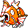
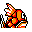

#129
Magikarp
Water
In the distant past, it was somewhat stronger than the horribly weak descendants that exist today.
Base stats Total 185
HP20
Attack10
Defense55
Speed80
Special20
Evolution
Pokédex data
- Species
- Fish Pokémon
- Height
- 2'11"
- Weight
- 22.0 lb
- Catch rate
- 255 / 255
- Base experience
- 20
- Growth rate
- Slow
Level-up moves 8
LevelMoveTypePowerAcc.PP
TM / HM moves 1
TM / HMMoveTypePowerAcc.PP
—Tmhm———